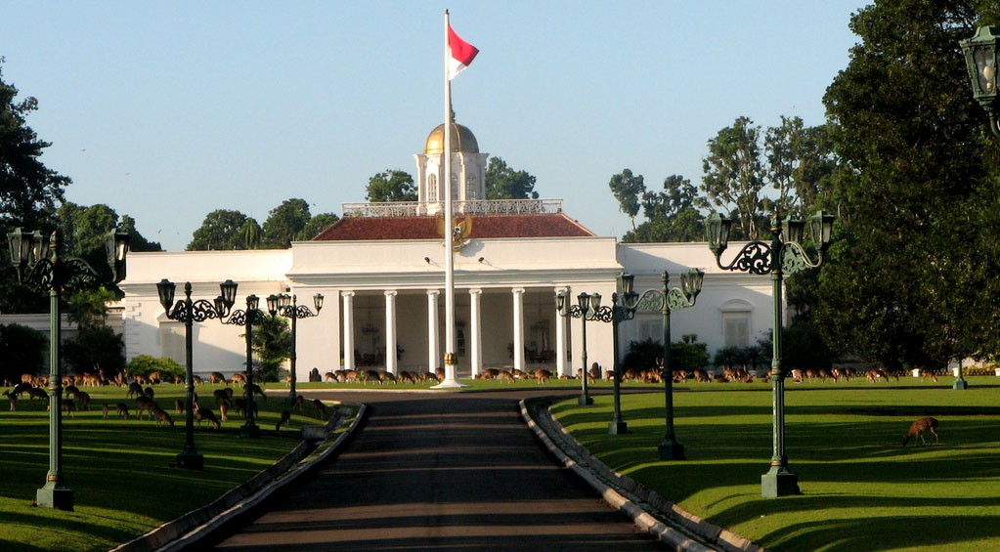
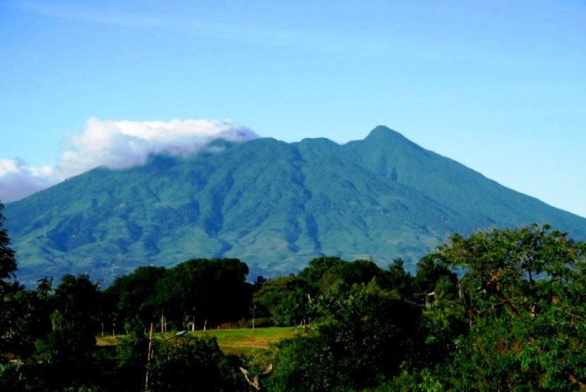

Sejarah

Sejarah berdirinya Kabupaten dan Kota Bogor ditetapkan tanggal 3 Juni 1482. Penetapan tanggal itu berdasarkan peristiwa pelantikan Raja Pajajaran yang terkenal yaitu Sri Baduga Maharaja atau Prabu Siliwangi.
Kata Bogor berasal dari kata Buitenzorg yang berarti tempat damai yang jauh dari segala hiruk pikuk. Nama tersebut dipakai pada zaman kolonialisme Belanda. Nama Bogor sudah ada dalam sebuah dokumen tanggal 7 April 1952 yang tertulis dalam Hoofd de Negorij Bogor yang berarti Kepala Kampung Bogor. Menurut informasi, Kampung Bogor terletak di dalam lokasi Kebun Raya Bogor yang sudah dibangun sejak 1817.
Geografis

Secara geografis Kota Bogor terletak di antara 106' 48' BT dan 6’ 26’ LS, kedudukan geografis Kota Bogor di tengah-tengah wilayah Kabupaten Bogor serta lokasinya sangat dekat dengan Ibukota Negara, merupakan potensi yang strategis bagi perkembangan dan pertumbuhan ekonomi dan jasa, pusat kegiatan nasional untuk industri, perdagangan, transportasi, komunikasi, dan pariwisata. Kota Bogor mempunyai rata-rata ketinggian minimum 190 m dan maksimum 330 m dari permukaan laut.
Kota Bogor dialiri beberapa sungai yang permukaan airnya jauh dibawah permukaan Kota, yaitu Sungai Ciliwung, Cisadane, Cipakancilan, Cidepit, Ciparigi, dan Cibalok, maka boleh dikatakan secara umum Kota Bogor aman dari bahaya banjir.
Iklim
Kondisi iklim di Kota Bogor suhu rata-rata tiap bulan 26’ C dengan suhu terendah 21,8’ C dengan suhu tertinggi 30,4’ C. Kelembaban udara 70 %, Curah hujan rata-rata setiap tahun sekitar 3.500 – 4000 mm dengan curah hujan terbesar pada bulan Desember dan Januari.
Wisata
Bogor menjadi tempat pelarian bagi warga Ibu Kota yang tengah penat karena rutinitas harian. Selain banyak objek wisata yang disediakan. Bogor menjadi salah satu tempat berlibur yang memiliki jarak tempuh tidak terlalu lama. Artinya tempatnya mudah untuk dijangkau.
*klik tombol diatas untuk melihat gambar
Kebun Raya Bogor berlokasi di Jalan Ir H Juanda nomor 13, Paledang, Kecamatan Bogor Tengah, Kota Bogor. Terkenal sebagai tempat untuk melihat bunga bangkai, tempat wisata ini juga memiliki spot instagramable yang digemari kawula muda. Salah satunya adalah Taman Soedjana Kassan yang dipenuhi berbagai bunga aneka warna dengan air mancur yang menghiasinya. Ada juga Taman Meksiko yang memiliki lebih dari 100 spesies tanaman kaktus. Selain itu, ada tempat tempat menarik lainnya seperti, tempat bebatuan kasar yang memiliki kesan seperti sedang berada di padang gurun Meksiko. Juga aliran sungai kecil yang bisa dikunjungi.

Devoyage Bogor berlokasi di Jalan Raya Boulevard CBD Bogor Nirwana Residence, Kecamatan Bogor Selatan, Kota Bogor. Taman hiburan bertema pedesaan Eropa dengan makanan, wahana & lokasi untuk berswafoto. Tempat wisata ini menawarkan sejumlah spot selfie instagramable, seperti replika Menara Eiffel atau kincir angin khas Belanda. Selain itu, disini juga disediakan perahu sampan untuk mengelilingi baknya kampung Eropa.